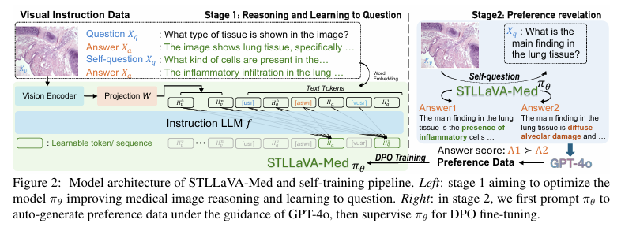
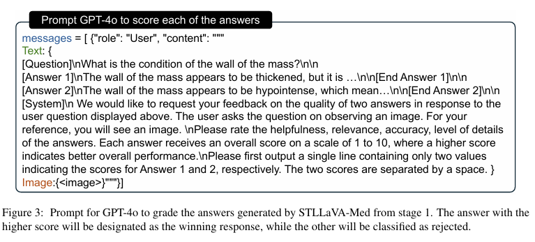
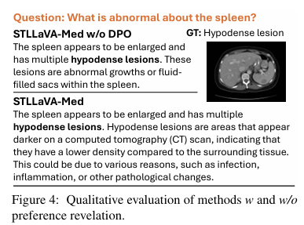
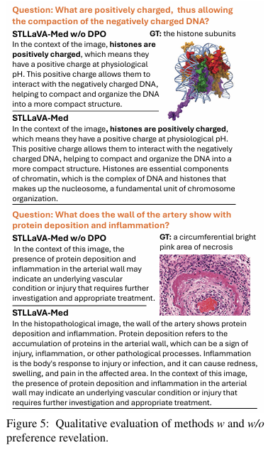
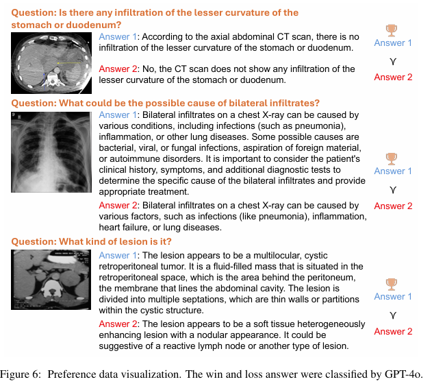

Large Vision-Language Models (LVLMs) have shown significant potential in assisting medical diagnosis by leveraging extensive biomedical datasets. However, the advancement of medical image understanding and reasoning critically depends on building high-quality visual instruction data, which is costly and labor-intensive to obtain, particularly in the medical domain.
To mitigate this data-starving issue, we introduce Self-Training Large Language and Vision Assistant for Medicine (STLLaVA-Med). The proposed method is designed to train a policy model (an LVLM) capable of auto-generating medical visual instruction data to improve data efficiency, guided through Direct Preference Optimization (DPO). Specifically, a more powerful and larger LVLM (e.g., GPT-4o) is involved as a biomedical expert to oversee the DPO fine-tuning process on the auto-generated data, encouraging the policy model to align efficiently with human preferences.
We validate the efficacy and data efficiency of STLLaVA-Med across three major medical Visual Question Answering (VQA) benchmarks, demonstrating competitive zero-shot performance with the utilization of only 9% of the medical data.
Medical data collection requires specialized expertise from physicians and raises privacy concerns, making it both time-consuming and costly.
Using large APIs (e.g., GPT-4) to generate medical data doesn't fully resolve the high API costs and still requires large-scale pre-training data for image-text alignment.
STLLaVA-Med enables the model to self-generate medical instruction data, supervised by GPT-4o through DPO. No medical pre-training needed — only 50K samples total.
A novel self-training approach for LVLMs that enhances medical reasoning skills with less medical data, improving data efficiency for domain-specific training.
STLLaVA-Med automatically constructs medical instruction data, supervised by GPT-4o and governed through DPO, allowing the LVLM to adhere to preferences (detail, relevance, accuracy) in a self-training way.
Competitive zero-shot performance on three major medical VQA benchmarks using only 9% of the medical data compared to LLaVA-Med (50K vs 530K samples).

Figure 2: Model architecture and self-training pipeline. Stage 1 optimizes the model for medical image reasoning and learning to question. Stage 2 prompts the model to auto-generate preference data under GPT-4o guidance, then fine-tunes via DPO.
The foundation of self-training is automatic question generation and answering.
We follow the SQ-LLaVA approach by adding a special token <vusr>
and setting question-tokens as learnable, jointly fine-tuning the policy model πθ
for both reasoning and questioning on visual instruction data.
The model optimizes two objectives simultaneously: visual questioning (Lvq) — learning to generate the next question given the image and conversation history — and answering (Lqa) — learning to generate answers conditioned on the question. After this stage, the model can raise and answer questions for medical images automatically.
For efficiency, LoRA adapters are used in both the vision encoder (rank=32, α=64) and LLM (rank=128, α=256). Critically, no medical image-text alignment pre-training is needed — pre-trained weights from general-purpose visual instruction tuning are loaded directly.
The trained model from Stage 1 is then used to auto-generate preference data. We randomly sample 10K medical images and prompt πθ to generate questions. For each question, the model generates two different answers (using temperature=1.2, TopK=100, TopP=0.95 for diversity). GPT-4o then scores both answers on helpfulness, relevance, accuracy, and level of detail, labeling them as win or loss.
The model is then fine-tuned through DPO, which fits an implicit reward to precisely control generation behavior by the pre-defined preferences. The policy model πθ and reference policy πref are initialized from the same Stage 1 weights, and only πθ is optimized.

Figure 3: Prompt design for GPT-4o to score the auto-generated answers. The higher-scoring answer is designated as the winning response.
STLLaVA-Med skips the expensive medical pre-training stage entirely, using only instruction fine-tuning data. Compared to LLaVA-Med's 530K+ total medical samples, STLLaVA-Med uses only ~50K.
| Method | #Images | #QA-Pairs |
|---|---|---|
| LLaVA-Medpt | 467,710 | 467,710 |
| LLaVA-Medft | 56,708 | 164,231 |
| STLLaVA-Med (ours) | 37,452 | 108,545 |
Table 1: Medical training data comparison. STLLaVA-Med requires no pre-training data.
We evaluate on three major medical VQA benchmarks: VQA-RAD (radiology), SLAKE (multi-modal medical), and PVQA (pathology). Open-ended questions are measured by Recall and F1 score; closed-ended questions by accuracy. All models use a 7B LLM. STLLaVA-Med achieves competitive or better performance than LLaVA-Med while using significantly less data.
| Dataset | Method | VQA-RAD | SLAKE | PVQA | ||||||
|---|---|---|---|---|---|---|---|---|---|---|
| Recall | F1 | Closed | Recall | F1 | Closed | Recall | F1 | Closed | ||
| - | GPT-4o | 51.60 | 9.23 | 63.97 | 59.06 | 8.90 | 71.63 | 24.14 | 3.29 | 75.97 |
| w/o Med-IM |
LLaVA-v1.5 | 23.63 | 9.53 | 50.74 | 35.23 | 8.84 | 52.16 | 11.85 | 2.73 | 52.76 |
| SQ-LLaVA | 23.91 | 6.29 | 52.57 | 40.04 | 9.65 | 57.45 | 11.24 | 2.63 | 53.73 | |
| Med-Flamingo | 10.32 | 10.37 | 52.21 | 8.46 | 7.67 | 37.02 | 1.23 | 1.24 | 45.59 | |
| PMC-VQA | 6.26 | 5.68 | 41.54 | 7.29 | 6.92 | 33.89 | 1.02 | 1.01 | 40.10 | |
| Med-IM | LLaVA-Med | 32.68 | 8.65 | 59.56 | 40.84 | 8.21 | 46.88 | 12.03 | 2.47 | 55.23 |
| STLLaVA-Med w/o DPO | 33.81 | 10.37 | 59.16 | 40.13 | 10.97 | 55.53 | 10.38 | 2.68 | 52.05 | |
| STLLaVA-Med | 37.12 | 10.83 | 60.35 | 46.69 | 11.46 | 57.69 | 11.92 | 2.72 | 52.90 | |
Table 2: Zero-shot comparison on three medical VQA benchmarks. All models use 7B LLM. Bold = best among Med-IM trained models.
Medical pre-training is unnecessary. Fine-tuning a general-purpose LVLM on a small set of medical instruction data achieves the same performance as fully training on medical data, suggesting strong vision-language alignment transfers well.
DPO improves open-ended answers. After DPO training, performance on open-ended questions improves significantly, showing that supervised preference optimization effectively controls the model to generate more detailed, relevant responses.
Beyond zero-shot evaluation, we also fine-tune on downstream tasks by combining Med-IM with training sets from VQA-RAD, SLAKE, and PVQA. STLLaVA-Med shows clear improvement over the baseline LLaVA-v1.5, confirming the effectiveness of the self-training pipeline.
| Method | VQA-RAD | SLAKE | PVQA | ||||||
|---|---|---|---|---|---|---|---|---|---|
| Recall | F1 | Closed | Recall | F1 | Closed | Recall | F1 | Closed | |
| LLaVA-v1.5 | 43.44 | 36.41 | 70.59 | 52.76 | 46.98 | 64.18 | 35.91 | 35.47 | 91.15 |
| STLLaVA-Med w/o DPO | 52.07 | 45.38 | 75.74 | 56.10 | 50.77 | 67.31 | 38.05 | 37.76 | 92.13 |
| STLLaVA-Med | 52.60 | 45.92 | 76.10 | 57.37 | 50.84 | 67.31 | 38.30 | 38.00 | 92.13 |
Table 4: Fine-tuning performance on downstream medical VQA tasks.
After DPO fine-tuning, STLLaVA-Med generates answers with higher relevance, more detail, and better accuracy compared to the model without DPO. The preference optimization effectively steers the model toward more informative and clinically useful responses.

Figure 4: STLLaVA-Med provides more detailed and medically accurate explanations (e.g., explaining hypodense lesions as areas appearing darker on CT with lower density) compared to the model without DPO.

Figure 5: Additional qualitative comparisons showing STLLaVA-Med generating more comprehensive, preference-aligned medical responses.

Figure 6: Preference data visualization. GPT-4o selects answers with more detail and in-depth analysis as winning responses, aligning with human preference for comprehensive medical explanations.
@inproceedings{sun2024stllavamed,
title = {Self-Training Large Language and Vision Assistant
for Medical Question-Answering},
author = {Sun, Guohao and Qin, Can and Fu, Huazhu
and Wang, Linwei and Tao, Zhiqiang},
booktitle = {Proceedings of the 2024 Conference on Empirical
Methods in Natural Language Processing (EMNLP)},
year = {2024},
pages = {20052--20060},
}This work is in part supported by NIH award R01NR018301.